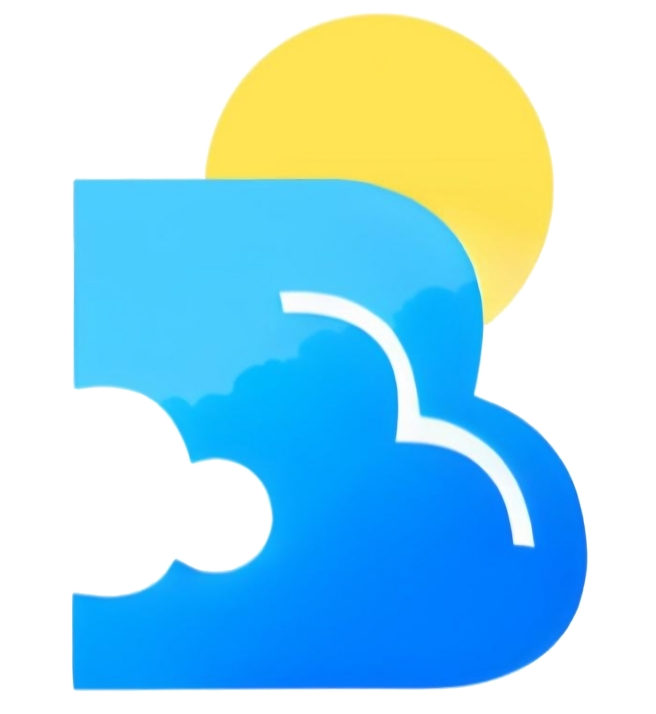

Météo du jour pour Quimper
Brévan Météo, pour vous donner une météo on ne peut plus fiable pour Quimper à 3 jours, le reste, je fais de mon mieux. Si un jour je ne le fais pas, le soir même j'actualise, j'ai quand même des devoirs à faire, je peux pas tout faire mais j'essaie. Il m'arrivera parfois de tricher et de ne pas faire la prévision pour la France :) et mettre une capture d'écran mais au moins vous avez la météo :)


Bélier : Votre patron se rendra compte qu’il peut vous remplacer par un robot ou une IA. Supprimez-le avant qu’il ne vous supprime.
Taureau : Vous ferez des sourires forcés toute la semaine, un peu comme Amélie Oudéa-Castera.
Gémeaux : Vous signerez tous vos messages par « Belle journée ».
Cancer : Si c’est la semaine de votre anniversaire, vous recevrez votre poids en bilans comptables erronés.
Lion : Vous essaierez une nouvelle glace Häagen-Dazs goût « défaite » ou « regrets ».
Vierge : Vous porterez un pantalon bariolé pour être un peu original(e) cet été. Attention.
Balance : Vous déciderez d’adopter un militant Reconquête, trouvé derrière une benne à ordures. Il sera craintif et agressif au début, mais vous pourrez lui apprendre l’amour.
Scorpion : Vous ne saurez pas quoi faire de votre vie, alors comme tout le monde, vous vous ferez tatouer un truc moche.
Sagittaire : Un type sûr de lui sur internet vous convaincra d’investir tout ce que vous avez dans les cryptos. Vous êtes foutu(e).
Capricorne : Vous vous mettrez à porter des lunettes de soleil bleu fumé, comme les vieux riches. Reprenez-vous.
Verseau : Gérald Darmanin vous appellera 2-3 fois par nuit, et vous l’entendrez juste souffler lentement dans le combiné.
Poissons : La police vous mettra sur écoute. Vous devrez parler en messages codés concernant les crimes que vous avez commis dernièrement. C’est une habitude à prendre.
Mail du créateur : L'enveloppe dans les liens utiles
Modèles utilisés : AROME, ARPEGE (Fr), ECMWF (UE), GFS(E-U) et quelque fois UKV(GB)
Brévan Hamel
Brévan Hamel
Manon Jaquemain
Arnaud De La Fayolle De La Tourne
Manon Jaquemain
Brévan Hamel
Brévan Hamel
Brévan Hamel
Brévan Hamel
Arnaud De La Fayolle De La Tourne
Linux Mint
Voyager Linux
Fedrora
blendOS
Brévan Hamel
Brévan Hamel
Brévan Hamel
Brévan Hamel
Brévan Hamel
Brévan Hamel